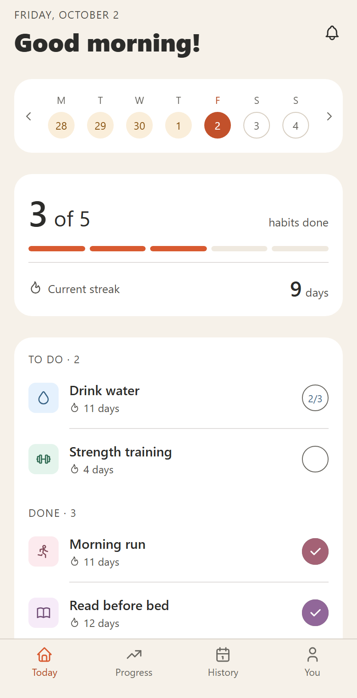

Nanbit
A habit tracker, made by Denver Delorino.
You add a few habits, pick which days each one is due, and tick them off. Nanbit keeps your streaks and shows a calendar of what you have done. It keeps your habits on your phone, with no analytics about how you use the app. You can sign in to back them up for free; you never have to.
